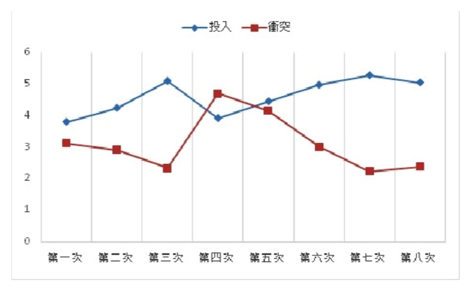

106 年第 2 次諮商心理師個案評估與心理衡鑑試題與答案
這一頁是民國 106 年第 2 次諮商心理師個案評估與心理衡鑑的整份歷屆試題，共 40 題，題目與標準答案出自考選部「國家考試試題及測驗式試題答案」開放資料，其中 40 題附有詳解。以下逐題列出題幹、選項與答案；要計時作答或記錄成績，請用線上練習。
考選部原始場次代碼：2
線上作答這一科 →
全部 40 題
第 1 題
下列那一項特質的評量適合採用自陳的方式？
- （A）批判思考
- （B）數學性向
- （C）語文創造力
- （D）科學態度
答案：（D）
詳解與考點
正解：「自陳」——此法最直接取得的是受試者對自身態度、信念與感受的報告，判準是特質能否由本人以內省方式陳述。科學態度包含對科學活動的興趣、信念與價值取向，適合由本人填答態度量表，故選 D。
A：批判思考重在分析論證、辨識證據與推論品質，宜以作業或情境題觀察實際表現；自陳「我很會思考」易受自我評價偏差影響。
B：數學性向是最大表現能力，須以數學推理或數量作業測驗評量，不能僅憑本人主觀報告。
C：語文創造力宜以開放式產出或作品評分衡量；它看似也可由本人描述興趣，錯在興趣不等於創造表現。
本題考點：自陳法（self-report）——適合態度、信念與主觀感受；最大表現測驗（maximum performance test）——以實作或作答測量能力。
第 2 題
智力評量結果，準備進行次群體間的差異比較，最適合採用下列那一種量尺？
- （A）心理年齡
- （B）答對比率
- （C）百分等級
- （D）標準分數
答案：（D）
詳解與考點
正解：「次群體間的差異比較」——比較不同群體時，需把原始表現轉到有共同平均數與標準差意義的尺度。標準分數將個人表現定位於常模分配，能在不同次群體間比較相對位置，故選 D。
A：心理年齡主要用發展年齡概念表述兒童智力表現，會隨年齡意義改變，不適合作為群體間的共同比較尺度。
B：答對比率只表示原始答對比例，未校正題目難度、年齡或群體分配，不能直接比較。
C：百分等級僅表示低於某常模群體的百分比，屬序位資訊，群體間距不等，精確比較差異不如標準分數。
本題考點：標準分數（standard score）——以常模平均數與標準差轉換原始分數；百分等級（percentile rank）——表示相對名次而非等距分數。
第 3 題
下列有關價值調查表在諮商中的用途之描述，何者錯誤？
- （A）價值觀是相當穩定的，不太可能改變
- （B）價值調查表的結果能促進案主的自我探索
- （C）價值調查表的結果應該與其他資料，如：興趣、能力與機會等一起整合解釋
- （D）案主的實際工作與價值觀愈符合，就愈感到滿意
答案：（A）
詳解與考點
正解：「何者錯誤」與「價值觀」——生涯諮商中的價值是重要且可相對穩定的偏好，但仍可能隨發展、角色與經驗調整。A 將其說成不太可能改變，過度絕對化，故為應選項。
B：價值調查可協助個案辨識自己重視的工作條件與生活方向，促進自我探索，敘述正確，故非答案。
C：解讀價值結果需連同興趣、能力與可得機會整合，才不會把單一量表結果當成生涯決定，敘述正確，故非答案。
D：工作內容與個人價值愈契合，通常愈容易感到滿意，符合人—環境契合理論的基本觀點，故非答案。
本題考點：工作價值觀（work values）——會影響生涯選擇與滿意度，並非完全固定；人—環境契合（person-environment fit）——重視個人特質與工作環境的相容性。
第 4 題
實施檔案評量時，心理師如何確保檔案資料的效度？
- （A）蒐集內容以單一變項為主
- （B）資料內容應具體可評量
- （C）需要深厚的晤談技巧
- （D）資料內容符合地域性
答案：（B）
詳解與考點
正解：檔案評量（portfolio assessment）要確保資料的效度，關鍵在於蒐集到的內容必須具體、可觀察且可依明確標準加以評量，如此評分者才能根據一致的規準判斷檔案內容是否真實反映當事人的能力或改變，這正是效度的核心要求；資料內容具體可評量，才能讓評量結果確實對應到所要測量的心理特質或能力，故選B。
A：蒐集內容若僅以單一變項為主，反而會使檔案內容過於片面，無法完整反映個案在多面向上的表現，這樣的檔案較難支持效度的判斷，屬於降低而非提升效度的作法。
C：晤談技巧涉及的是蒐集資料過程中如何與個案互動、取得完整而真實的資訊，這比較關乎資料蒐集的品質與晤談歷程本身，並非檔案評量效度的直接判準。
D：資料內容是否符合地域性，屬於資料的適用脈絡或代表性考量，並非檔案評量效度成立與否的核心要件，效度的關鍵仍在於內容是否具體、可依標準評量。
本題考點：檔案評量（portfolio assessment）——蒐集多元且具體可評量的資料以支持效度；心理衡鑑效度（validity）的判準——測量內容是否確實對應所欲評量之特質。
第 5 題
行為衡鑑中，經常使用生理反應的評估，其方式不包括下列何項？
- （A）肌肉張力
- （B）血管擴張
- （C）腦電波儀器
- （D）疼痛耐受度
答案：（D）
詳解與考點
正解：「生理反應的評估」與「不包括」——此類衡鑑記錄可被儀器直接量測的身體生理指標。疼痛耐受度是個體對疼痛的主觀感受與行為忍受表現，不是經常用來記錄的生理反應指標，故選 D。
A：肌肉張力可透過生理記錄反映肌肉緊繃程度，是常見的生理反應資料。
B：血管擴張屬血管生理變化，可作為喚起或情緒反應的客觀指標。
C：腦電波儀器可記錄腦部電生理活動，屬儀器化的生理評估。
本題考點：生理衡鑑（physiological assessment）——以身體可記錄的反應作為資料；疼痛耐受度（pain tolerance）——涉及主觀經驗與行為反應，不能直接等同生理訊號。
第 6 題
下列有關五大因素人格理論之敘述，何者錯誤？
- （A）這五大因素包含神經質、外向性、開放性、友善性與嚴謹性
- （B）新修訂人格量表（NEO Personality Inventory-Revised）係根據這五大因素編製而成
- （C）神經質傾向的人容易發怒、焦慮、憂鬱
- （D）開放性的人常表露出自律、追求成就、負責任等特質
答案：（D）
詳解與考點
正解：五大人格因素理論中，開放性（openness）指的是想像力、審美敏感度、對新經驗的好奇與探索、觀念的彈性等特質，自律、追求成就、負責任這些特質實際上是嚴謹性（conscientiousness）的核心表現，題幹把嚴謹性的特質誤植給開放性，屬敘述錯誤，故選 D。
A：五大因素為神經質（neuroticism）、外向性（extraversion）、開放性（openness）、友善性（agreeableness）、嚴謹性（conscientiousness），這是五大人格理論公認的五個向度，敘述正確。
B：新修訂人格量表（NEO Personality Inventory-Revised，NEO PI-R）由 Costa 與 McCrae 依據五大因素模型編製，是目前應用最廣的五大人格衡鑑工具之一，敘述正確。
C：神經質衡量的是情緒穩定度的反面，高神經質者情緒起伏大，容易出現焦慮、憤怒、憂鬱等負向情緒反應，敘述正確。
本題考點：五大人格因素理論（Big Five personality traits）——神經質、外向性、開放性、友善性、嚴謹性五向度定義；NEO PI-R——依五大因素模型編製之人格衡鑑工具。
第 7 題
非理性信念量表主要適用在何種心理評估範疇的衡鑑？
- （A）憂鬱自殺
- （B）社交技巧
- （C）恐懼焦慮
- （D）婚姻關係
本題送分，無標準答案
詳解與考點
正解：本題經考選部公告一律給分，作答任一選項皆得分。原因是題目要找非理性信念量表主要適用的評估範疇，但「非理性信念量表」不是單一標準化工具的專名，中文文獻裡以此名出現的量表有的測一般情緒困擾、有的專測親密關係中的非理性信念，題幹又未指明版本；而理情行為治療主張非理性信念同時是焦慮與憂鬱的維持機制，（A）憂鬱自殺與（C）恐懼焦慮兩個範疇都指得出依據，故送分。
A：以「應該」與「必須」為形式的絕對化要求，被視為憂鬱情緒的核心維持機制，非理性信念與憂鬱的關聯是理情行為治療文獻反覆處理的主題，以憂鬱為主要適用範疇有其依據。
B：社交技巧屬行為表現層次，衡鑑上以行為觀察、角色扮演評量或技巧檢核表為主，非理性信念量表測的是認知內容，不是這個範疇的主要工具。
C：非理性信念中的災難化與「無法忍受」式評價，最直接對應預期性焦慮與逃避行為，以恐懼焦慮為主要適用範疇同樣站得住，也是多數教材採用的說法。
D：婚姻關係方面另有針對親密關係編製的非理性信念工具，但那是特定應用版本，不是「主要適用範疇」的答案。
本題考點：理情行為治療（Rational Emotive Behavior Therapy）的非理性信念（irrational beliefs）概念與其衡鑑工具；同名量表可能有不同編製來源與適用對象——判斷適用範疇之前，要先確認題目指的是哪一個版本以及它的常模對象。
第 8 題
進入一個新環境，每個個體都有一段不同的適應期，對個體人際適應的了解，可以採用下列何種測驗？
- （A）人格測驗
- （B）智力測驗
- （C）性向測驗
- （D）成就測驗
答案：（A）
詳解與考點
正解：「人際適應」，判準是測驗測量人格與社會互動風格，還是認知能力、潛在能力或已習得表現。了解個體進入新環境後的人際適應情形，關注的是個人在社會情境中的性格傾向、人際互動風格與情緒調節方式，這正是人格測驗（personality test）所要測量的範疇；人格測驗常包含社會適應、人際關係等相關量尺，能反映個體在新環境中與他人互動、建立關係的模式，故選 A。
B：智力測驗測量的是個體的一般認知能力，例如推理、記憶、語文與空間能力，與人際適應這種社會性、情緒性的面向關聯有限。
C：性向測驗測量的是個體在特定領域尚未經訓練前所具備的潛在能力，用途在於預測未來學習或工作表現，並非用來了解人際適應。
D：成就測驗測量的是個體透過學習或訓練後，在特定知識或技能上已經達到的表現水準，屬於已習得能力的評量，與人際適應的了解無直接關聯。
本題考點：心理測驗類型的區分（personality/intelligence/aptitude/achievement tests）——人格測驗適用於評估人際與社會適應等性格層面的功能。
第 9 題
下列有關諮商中心使用新出版測驗之敘述何者正確？
- （A）將指導手冊放在書架上供同仁查閱
- （B）讓案主自行閱讀測驗的電腦解釋
- （C）事先派工作同仁受訓成為合格施測者
- （D）把測驗結果保存在電腦網站中，以利隨時查閱
答案：（C）
詳解與考點
正解：新出版測驗在諮商中心正式使用前，專業倫理要求施測者必須具備足夠的訓練與資格，才能確保測驗的正確施測、計分與解釋，也才能保障案主的權益；事先安排工作同仁接受訓練、成為合格施測者，是導入新測驗最基本且必要的程序，故選 C。
A：只是把指導手冊放上書架供同仁自行查閱，並沒有確保同仁真正理解測驗的實施程序、常模適用範圍與解釋限制，缺乏正式訓練與資格把關，不足以確保專業使用測驗的品質。
B：測驗的電腦化解釋報告是原始的統計性推論結果，需要由具備專業訓練的心理師加以整合、脈絡化解讀後才能提供給案主；讓案主直接閱讀未經專業詮釋的電腦報告，可能造成誤解、甚至不必要的心理負擔，並不恰當。
D：測驗結果屬於高度敏感的個人資料，若只是存放在電腦網站上以方便隨時查閱，卻未說明其存取權限、保密與資訊安全的具體管控機制，將使案主的隱私與測驗資料保密性暴露在風險之中，不符合專業倫理對測驗資料保管的要求。
本題考點：測驗使用者資格與訓練（qualified test user）——新測驗導入前的必要程序；測驗結果的保密與適當解釋——避免未經專業詮釋或保護不周的資料流通。
第 10 題
關於精神疾病統計與診斷準則第五版（DSM-5）的描述，何者錯誤？
- （A）不再採取五軸式的多軸向系統
- （B）相較之下更重視以病因學來建構診斷類群
- （C）創傷後壓力症（PTSD）被歸類於焦慮症中
- （D）儲物症（hoarding disorder）被歸類於強迫症及相關障礙症中
答案：（C）
詳解與考點
正解：DSM-5 在焦慮相關診斷的編排上，將創傷後壓力症（PTSD）自原本的焦慮症章節移出，另立「創傷及壓力相關障礙症」（trauma- and stressor-related disorders）專章，因為此類疾患的核心機轉是暴露於創傷或壓力事件後的病理反應，而非單純以焦慮為核心特徵。C 敘述「PTSD 被歸類於焦慮症中」與 DSM-5 的實際編排相反，是錯誤敘述，故選 C。
A：DSM-5 確實不再採用 DSM-IV 的五軸多軸向系統，改採單一軸向並以分開的方式記錄醫學狀況與心理社會脈絡因素，敘述正確。
B：DSM-5 章節編排相較 DSM-IV 更參考病因學、共病模式與神經發展脈絡等面向來安排診斷類群的先後順序與分類方式，敘述正確。
D：儲物症（hoarding disorder）在 DSM-5 中新增為獨立診斷，歸類於「強迫症及相關障礙症」章節之下，敘述正確。
本題考點：DSM-5 分類架構——取消多軸系統、依病因與發展脈絡重新編排章節；創傷及壓力相關障礙症（trauma- and stressor-related disorders）——PTSD 於 DSM-5 中自焦慮症獨立出來的專章。
第 11 題
諮商的過程中心理師可藉生物心理社會模式（biopsychosocial model）對案主進行個案評估；下列有關此 模式中提及的 4P，何者錯誤？
- （A）前置因素（predisposing factors）
- （B）促成因素（precipitating factors）
- （C）蔓延因素（propagating factors）
- （D）保護因素（protective factors）
答案：（C）
詳解與考點
正解：生物心理社會模式中常用的個案概念化架構 4P，分別是前置因素（使個案較容易發展出困擾的體質或背景因素）、促成因素（誘發此次困擾發作的近因或壓力事件）、持續因素（維持或惡化困擾、使其持續存在的因素）、以及保護因素（有助於個案因應、復原的資源）。選項中的蔓延因素並非 4P 架構中的正式名稱，正確的第三個 P 應為持續因素，強調的是使困擾持續下去的維持機制，而非蔓延擴散的概念，故選 C。
A：前置因素是使個案較容易產生此次困擾的既有體質、人格或環境背景因素，屬於 4P 架構之一。
B：促成因素是直接誘發此次困擾發生的近期壓力事件或觸發因子，屬於 4P 架構之一。
D：保護因素是個案本身或環境中有助於因應困擾、促進復原的正向資源，屬於 4P 架構之一。
本題考點：生物心理社會模式個案概念化——前置、促成、持續、保護四類因素（4P）的區辨；持續因素——維持困擾持續存在的機制，與前置、促成因素在時間軸上的角色不同。
第 12 題
下列有關心理評估在諮商中的使用時機，何者敘述較不適當？
- （A）初步晤談（intake）後可應用評量工具協助確認案主問題所在
- （B）諮商後期諮商關係已穩定，不需要心理評估
- （C）諮商進行中透過心理評估協助案主選擇行動策略
- （D）可以透過心理評估驗證諮商的有效性
答案：（B）
詳解與考點
正解：心理評估在諮商歷程中並非只用於初期診斷，即使諮商關係已經穩定、進入後期，心理評估仍可用來檢核目標達成程度、驗證介入成效，或協助決定是否結案與追蹤，因此「諮商後期不需要心理評估」的說法忽略了評估在成效驗證上的持續價值，是四個敘述中較不適當的一項，故選B。
A：初步晤談之後運用評量工具，有助於釐清案主的問題性質、嚴重程度與可能的診斷方向，是心理評估在諮商初期常見且適當的運用時機，敘述適當。
C：諮商進行中透過心理評估了解案主的特質、資源與限制，可以協助案主與諮商師共同篩選出較適切的行動策略，屬評估在歷程中期的合理運用，敘述適當。
D：以標準化工具在諮商前後施測、比較分數變化，是驗證諮商介入是否產生實質效果的常見做法，屬於結果評估（outcome assessment）的範疇，敘述適當。
本題考點：心理評估在諮商歷程中的運用時機——初期釐清問題、中期協助決策、後期驗證成效，貫穿整個諮商歷程而非僅限於開始階段。
第 13 題
評估者透過觀察、晤談或其他方法來蒐集資料，逐漸對案主問題形成假設，如果這些假設與各種資料一 致而得到驗證，此種獲得確認的程度符合下列那一種概念？
- （A）增益效度（incremental validity）
- （B）概念效度（conceptual validity）
- （C）特異度（specificity）
- （D）初步印象效應（primary effect）
答案：（B）
詳解與考點
正解：評估者根據觀察、晤談等方式蒐集的資料逐步形成對案主問題的假設，這個假設其實就是評估者對案主問題本質所建構出的一套「概念」；當這套概念與後續持續蒐集到的各種資料相互一致、彼此印證時，代表這套概念得到了資料的支持與驗證，這種一致性所反映出的確認程度，符合概念效度（conceptual validity）的意涵，即評估者所形成的臨床概念／假設，能否被多方資料收斂一致地支持，故選 B。
A：增益效度指的是在既有評估工具或資訊之外，額外加入一項新的測量或資料來源，是否能顯著提高預測或判斷的準確度，談的是「多一項資料是否有幫助」，而不是「假設與資料是否一致」的驗證歷程，與題幹描述不同。
C：特異度是診斷或篩檢工具中，正確辨識出「真正沒有該問題者」的比率，屬於統計上的診斷準確性指標，並非用來描述評估者臨床假設獲得資料印證的概念。
D：初步印象效應是指評估者容易受最初接觸到的資訊或第一印象過度影響後續判斷的認知偏誤，屬於一種可能扭曲評估歷程的偏誤，而非題幹所描述「假設經多方資料一致驗證」這種正向、獲得確認的歷程。
本題考點：臨床衡鑑中的假設驗證歷程——評估者形成並檢驗案主問題概念的歷程；概念效度（conceptual validity）——臨床概念或假設經多方資料收斂一致所獲得的確認程度，有別於增益效度、特異度等統計性效度指標。
第 14 題
某諮商心理師在個案報告時，提到「案主的因應行為傾向於內化（internalization）」，心理師最可能是從 下列那一個現象來推論的？
- （A）將自己的問題歸罪於他人
- （B）操縱他人
- （C）尋求刺激以分散注意力
- （D）過分限制自我情緒表達
答案：（D）
詳解與考點
正解：「內化」；判準是情緒與衝突是否導向自身、受壓抑或受限制。D 過分限制自我情緒表達正是把感受向內收的因應方式，故選 D。
A：將問題歸罪他人是向外歸因，屬外化取向。
B：操縱他人是把處理困境的力道指向外在對象，屬外化表現。
C：尋求刺激以分散注意力是向外活動以逃避不適，較接近外化或迴避，而非內化。
本題考點：內化與外化因應——判準是情緒處理的方向；壓抑、自我限制屬內化，歸咎他人、行動化或向外尋求刺激屬外化。
第 15 題
在個案評估中，下列那一項行為或心理狀態描述，最可能用在評估性格功能中的「神經質」傾向？
- （A）焦慮程度
- （B）對他人充滿好奇
- （C）缺乏同情心
- （D）依賴程度
答案：（A）
詳解與考點
正解：性格功能的「神經質」傾向——五大人格中的神經質核心是負向情緒不穩定與易受壓力困擾。焦慮程度直接反映憂慮、緊張與情緒脆弱，最能評估此傾向，故選 A。
B：對他人充滿好奇較接近開放性或人際興趣，不是神經質的核心描述。
C：缺乏同情心主要關聯宜人性低落或反社會人際特徵，不能據以判斷神經質。
D：依賴程度可能與依附或人格特徵有關，但不等於負向情緒不穩定；它看似與焦慮相關，錯在評估的不是神經質核心。
本題考點：神經質（neuroticism）——負向情緒性與壓力易感性；五大人格（Big Five personality traits）——以不同特質向度描述人格功能。
第 16 題
在八次自我探索團體中，依據每次團體結束時 11 名成員填寫的團體氣氛量表 （group climate questionnaire） 分數，而得下圖投入氣氛與衝突氣氛指標之變化，第四次團體最可能是團體發展歷程的那一個階段？

- （A）開始階段
- （B）結束階段
- （C）轉換階段
- （D）工作階段
答案：（C）
詳解與考點
正解：圖中第四次團體的「衝突」指標明顯升至全程最高，而「投入」指標較第三次下降。團體成員開始對帶領者、規範或彼此互動產生試探、抗拒與不同意見，正是從初步安全感走向處理權力、控制與信任議題的轉換階段（transition stage）特徵，故選 C。
A：開始階段的主要任務是成員定向、建立安全感與初步信任；成員通常較謹慎、禮貌，衝突未必會像第四次般升高至最高點，故不符。
B：結束階段著重回顧收穫、整合經驗、處理分離感與將所學帶回生活。圖中第四次後尚有四次團體，且衝突正達高峰，並非準備結束的型態。
D：工作階段通常呈現較高且相對穩定的投入，成員能更聚焦地探索議題與互相回饋。圖中第五次以後投入逐漸提高、衝突下降，較接近進入工作階段；第四次仍以衝突高峰為主，故非答案。
本題考點：團體發展歷程（group development）——開始階段重定向與安全感；轉換階段（transition stage）常見權力、控制、抗拒與衝突；工作階段（working stage）則以較穩定的投入和深入探索為判準。
第 17 題
在諮商中進行個案評估，其中一項任務就是為了能夠界定問題，下列何者不是界定問題的目的？
- （A）心理疾患的診斷
- （B）與轉介來源溝通
- （C）幫助案主瞭解自己的主訴問題
- （D）評估諮商是否有效
答案：（D）
詳解與考點
正解：「界定問題的目的」——問題界定是衡鑑前段用來澄清主訴、形成初步理解與溝通焦點的工作。評估諮商是否有效屬於介入後的成效評估，不是界定問題本身的目的，故選 D。
A：界定問題可協助辨認是否涉及需要診斷或進一步鑑別的心理疾患，故屬相關目的。
B：清楚界定問題有助與轉介來源說明服務焦點與需求，故非答案。
C：協助個案理解與具體化主訴，正是共同界定問題的重要功能，故非答案。
本題考點：問題界定（problem definition）——澄清主訴、需求與服務焦點；成效評估（outcome evaluation）——檢核介入是否達成目標，時點在問題界定之後。
第 18 題
評估案主對諮商的準備度有助於有效治療技術的選用。依據 Prochasks 的改變理論觀點，下列有關諮商準 備度之敘述何者較適當？
- （A）沒有覺察自己的問題，由重要他人堅持來諮商的案主是處於準備（preparation）階段
- （B）能夠覺察自己的問題，也準備要改變，但還無法承諾行動的是前深思熟慮（precontemplation）階段
- （C）行動（action）階段的案主呈現已有一小段時間成功改變自己的行為
- （D）維持（maintenance）階段的案主是對行為有小改變，而且維持一個月以上
答案：（C）
詳解與考點
正解：Prochaska 跨理論模式（Transtheoretical Model）將改變分為前深思熟慮期（precontemplation，尚未覺察或不願面對問題）、深思熟慮期（contemplation，覺察問題並認真考慮改變但尚未承諾行動）、準備期（preparation，已決定在近期採取行動，可能已有小幅嘗試）、行動期（action，已具體改變行為，但時間尚短，通常在六個月內）、維持期（maintenance，已維持改變達六個月以上，重點在預防復發）。C 描述行動期案主已有一小段時間成功改變自己的行為，符合行動期「已採取具體行動、但持續時間尚短」的定義，故選 C。
A：沒有覺察問題、被重要他人強迫前來的案主，是尚未認知問題存在，屬於前深思熟慮期，而非準備期；準備期案主應已自覺問題且準備近期行動。
B：能覺察問題、也準備要改變但尚未能承諾行動，是深思熟慮期的典型樣貌（已認知問題、猶豫於改變的利弊），而非前深思熟慮期；前深思熟慮期案主根本尚未認真考慮改變。
D：維持期的判準通常是行為改變已持續六個月以上並致力預防復發，而非僅維持一個月；一個月的小改變較接近行動期初期，尚未達到維持期的時間門檻。
本題考點：Prochaska 跨理論模式改變階段（stages of change）——前深思熟慮、深思熟慮、準備、行動、維持五階段的定義與時間判準；諮商準備度評估——依案主所處階段選擇合適的介入技術。
第 19 題
諮商心理師與 15 歲的林小凡晤談中發現：「這一年多來幾乎每天都會因為一些小事對家人發脾氣，整天 心情暴怒；也不斷出現大聲罵弟弟的情形。」據家人表示案主沒有身體或神經上的病症，若以 DSM-5 來 評估林小凡，較可能的心理疾病為何？
- （A）侵擾性情緒失調症（disruptive mood dysregulation disorder）
- （B）鬱症（major depressive disorder）
- （C）反社會型人格障礙症（antisocial personality disorder）
- （D）雙相情緒障礙症（bipolar disorder）
答案：（A）
詳解與考點
正解：侵擾性情緒失調症（disruptive mood dysregulation disorder, DMDD）的診斷核心，是長期、幾乎每天出現的暴怒心情，並伴隨與情境不成比例、頻繁的嚴重脾氣爆發（temper outbursts，如對弟弟大聲責罵）。林小凡「一年多來幾乎每天」對家人發脾氣、整天心情暴怒，且反覆對弟弟大聲責罵，時間長度與症狀型態都精準對應 DMDD 的診斷準則，故選 A。
B：鬱症的核心症狀是持續的憂鬱心情或失去興趣愉悅感，並常伴隨睡眠、食慾、精力等生理症狀；林小凡表現的是暴怒與易怒，而非典型的憂鬱情緒低落樣貌，症狀輪廓與鬱症不符。
C：反社會型人格障礙症依 DSM-5 規定須年滿 18 歲才能診斷，且核心特徵是漠視並侵犯他人權利、違反社會規範，林小凡僅 15 歲，不符合診斷年齡下限，症狀描述也偏向情緒失調而非反社會行為模式。
D：雙相情緒障礙症的特徵是情緒在鬱期與躁期（或輕躁期）之間呈現發作型的週期性轉換，躁期需有明顯的情緒高昂、活力增加等症狀群；林小凡的暴怒是持續、慢性、瀰漫性的心情狀態，而非陣發性的躁期發作，不符合雙相情緒障礙症的病程特徵。
本題考點：侵擾性情緒失調症（disruptive mood dysregulation disorder, DMDD）——慢性易怒與頻繁暴怒發作的兒童青少年診斷；DSM-5 情緒疾患鑑別——需依症狀時間型態（持續性 vs 發作性）與年齡限制區分近似診斷。
第 20 題
在評估會談時，下列何種狀況較不適合使用正常化技巧（normalization）？
- （A）性侵害行為
- （B）暴食問題
- （C）憂鬱問題
- （D）酗酒問題
答案：（A）
詳解與考點
正解：正常化技巧（normalization）的作用，是藉由告訴當事人「很多人都曾有類似經驗」，降低當事人因病恥感或罪惡感而不敢揭露症狀的心理負擔，常用於憂鬱、飲食問題、物質使用等當事人本身正在承受痛苦、需要被鼓勵說出來的狀況。但性侵害行為指的是當事人對他人所為的加害行為，若對加害行為使用正常化技巧，等於暗示「很多人都會這樣做」，容易被當事人拿來合理化或淡化自己的傷害行為，妨礙其承擔責任與看見行為的嚴重性，因此在評估性侵害行為時較不適合使用正常化技巧，故選 A。
B：暴食問題的當事人常因害怕被評價而隱瞞暴食與催吐等行為，以正常化語句開場（例如「不少人在壓力大時會用吃來紓壓」）有助於當事人願意誠實描述症狀，適合使用。
C：憂鬱是最典型會使用正常化技巧的狀況之一，藉由讓當事人知道情緒低落、失去興趣等經驗並不罕見，降低其自覺「我很奇怪」的孤立感，適合使用。
D：酗酒當事人常因擔心被貼標籤而低報飲酒量，正常化技巧能降低防衛、提高評估的誠實度，適合使用。
本題考點：正常化技巧（normalization）——藉由揭示經驗的普遍性降低當事人揭露的心理阻抗；適用情境的界線——用於當事人自身受苦的症狀，而非用於評估他人所受的加害行為，以免傳遞淡化傷害的訊息。
第 21 題
會談初期實務工作者需要適當處理許多議題，其中不包括：
- （A）介紹自己與自己希望的稱呼，也了解案主希望怎麼被稱呼
- （B）說明會談的目的，檢核案主對會談了解的程度，若兩者有差異則加以澄清
- （C）告知案主在會談中的角色與任務，澄清案主在關係中的責任
- （D）如果會談會使用測驗，避免告知測驗的意義與目的以防測驗失真
答案：（D）
詳解與考點
正解：晤談初期需完成多項基本任務，包括自我介紹與確認稱謂、說明晤談目的並核對案主的理解、釐清案主在晤談關係中的角色與責任，這些都屬於建立合作關係與知後同意（informed consent）的必要步驟。若晤談會使用測驗，實務工作者應主動告知測驗的性質、目的與運用方式，讓案主在理解的前提下同意接受評估；刻意「避免告知」以防「測驗失真」不僅違反知後同意原則，也可能損害案主的自主決定權與信任關係，故選 D。
A：自我介紹與確認案主希望的稱呼是建立初步關係、展現尊重的基本作法，屬於晤談初期應處理的議題，敘述正確。
B：說明晤談目的並檢核案主的理解程度、有落差時加以澄清，能確保雙方對晤談方向有共識，是初期晤談的必要工作，敘述正確。
C：告知案主在晤談中的角色與任務、釐清其在關係中的責任，有助於建立清楚的合作架構，也是初期晤談應處理的議題，敘述正確。
本題考點：晤談初期任務（establishing the working relationship）——建立關係、說明目的與角色分工；知後同意（informed consent）——尤其是測驗使用前的告知義務。
第 22 題
諮商心理師正為服務機構選購情意領域的相關測驗與量表，下列那一項測驗較能符合其評量內涵之要 求？
- （A）語文性向測驗
- （B）藝文創造力量表
- （C）數學態度量表
- （D）音樂創作測驗
答案：（C）
詳解與考點
正解：「情意領域」——情意評量測量態度、興趣、價值或情緒等非認知面向。數學態度量表評量個人對數學的感受與信念，屬情意領域，故選 C。
A：語文性向測驗評估語文能力潛能，屬認知能力測驗。
B：藝文創造力量表雖有「量表」之名，但題意指向創造力表現，主要不是態度或價值的情意內涵。
D：音樂創作測驗要求產出作品以評估表現，屬最大表現而非情意評量；它看似涉及藝術興趣，錯在測量的是創作能力。
本題考點：情意領域（affective domain）——態度、價值、興趣與情緒；認知領域（cognitive domain）——知識、推理與能力表現。
第 23 題
在會談評估中，下列那一項比較不被用來推論案主感受的資料？
- （A）案主的言談
- （B）案主的臉部表情
- （C）案主的身體動作
- （D）案主的病識感
答案：（D）
詳解與考點
正解：「推論個案感受」——會談中感受的直接線索來自語言內容與非語言表達；病識感則是個案對自身問題的覺察與理解。病識感不能直接用來推論當下感受，故選 D。
A：個案的言談可直接表達情緒名稱、事件意義與主觀感受，是重要資料。
B：臉部表情可提供情緒狀態的非語言線索，需與脈絡交互驗證。
C：姿勢、動作與生理緊繃等身體動作，也可協助推論感受。
本題考點：會談觀察（interview observation）——整合語言與非語言線索；病識感（insight）——對自身困擾與狀態的覺察，不等同情緒感受。
第 24 題
依測驗的反應型態來區分，測驗可分為最大表現測驗及典型表現測驗。其中典型表現測驗是在測量一般 情境下，個人所表現的典型行為或態度，下列那一種測驗不屬於典型表現測驗？
- （A）人格測驗
- （B）興趣測驗
- （C）智力測驗
- （D）適應行為量表
答案：（C）
詳解與考點
正解：「不屬於典型表現測驗」——典型表現測驗看人在一般情境中慣常的態度或行為，沒有對錯與全力作答的要求。智力測驗要求受試者盡力解題以呈現能力上限，屬最大表現測驗，故選 C。
A：人格測驗探查慣常的情緒、思考與行為傾向，屬典型表現測驗。
B：興趣測驗測量喜好與偏好，沒有正確答案，屬典型表現測驗。
D：適應行為量表描述日常生活中的實際功能，重點是典型行為，故非答案。
本題考點：典型表現測驗（typical performance test）——測量慣常態度與行為；最大表現測驗（maximum performance test）——測量盡力作答時的能力表現。
第 25 題
下列何者不是心理衡鑑時參考檔案資料的優點？
- （A）資料多元化
- （B）有助衡鑑結果更客觀、公正
- （C）了解案主成長和改變歷程
- （D）在個別化的基礎上進行心理衡鑑
答案：（B）
詳解與考點
正解：「參考檔案資料的優點」與「不是」——檔案可補足不同時間、不同情境的資料，但其內容由他人記錄，可能受記錄者觀點、目的與完整性影響。B 把檔案資料視為能直接提升客觀、公正的固有優點；但檔案可能受記錄目的、記錄者觀點與完整性限制，故選 B。
A：檔案可帶來會談與測驗以外的資料來源，增加資料多元性，故非答案。
C：累積性的學校、醫療或服務紀錄有助了解個案成長及改變歷程，故非答案。
D：檔案能提供個案獨特背景與脈絡，協助在個別化基礎上進行衡鑑，故非答案。
本題考點：檔案資料（records）——提供歷程與多元脈絡；資料三角檢證（triangulation）——整合多來源並檢視偏差，不把單一紀錄視為客觀事實。
第 26 題
對於兒童注意力不足／過動症的診斷，除了衡鑑者的現場觀察與評估，尚需兩種以上社會情境的確認， 因此學校與家庭通常是最直接的場所。在我們收集這些資料時，下列那一個程序最恰當？
- （A）直接與家長和學校師長聯繫，了解案主於兩地方的適應與生活狀況，並將所需量表資料直接從電話中 取得
- （B）一般實務狀況，必須當面與家長和教師詢問面談以取得相關資料
- （C）如果教師聯絡不易，直接從家長處詢問學校相關適應資料
- （D）可以與家長會談之後，請家長帶相關資料給學校教師，並請學校教師填寫；如有相關問題，請學校教 師與施測者針對衡鑑內容與目的進行討論
答案：（D）
詳解與考點
正解：ADHD衡鑑須整合來自不同情境（如家庭與學校）的多方資料，程序上應兼顧資料的可靠性與跨系統溝通。D的作法先與家長會談了解狀況，再請家長攜帶標準化量表等資料交由學校教師依專業程序填寫，且保留施測者與教師之間就衡鑑內容與目的直接討論的管道，兼顧資料蒐集的完整性、量表施測的正確性與跨情境溝通的品質，是最恰當的程序，故選D。
A：量表資料涉及標準化施測與作答說明，透過電話直接取得容易造成填答者誤解題意或漏答，影響資料效度，並不恰當。
B：面對面晤談雖理想，但將其列為「必須」的唯一程序過於僵化，實務上常因時間、地點限制而需要彈性安排，非最恰當的普遍性做法。
C：學校適應資料應直接來自教師的觀察，改由家長轉述學校情形容易失真，家長對校內行為的了解通常有限，資料可靠性不足。
本題考點：多情境衡鑑（multi-informant assessment）——ADHD診斷須整合家庭與學校雙重來源資料；衡鑑資料蒐集程序的專業把關（標準化施測、跨系統溝通）。
第 27 題
下列何者較不屬於自陳式量表的心理衡鑑運用範疇？
- （A）憂鬱、恐懼與焦慮
- （B）依附關係
- （C）婚姻關係
- （D）兒童認知發展
答案：（D）
詳解與考點
正解：「自陳式量表」——此法要求受試者能理解題意、回顧自身經驗並報告主觀狀態。兒童認知發展通常需以發展任務、觀察或個別測驗評估，不是自陳量表的主要運用範疇，故選 D。
A：憂鬱、恐懼與焦慮含有主觀情緒經驗，常可用自陳量表篩檢或追蹤。
B：依附關係可由個人對親密關係經驗與信念的自陳資料衡量，故非答案。
C：婚姻關係中的滿意度、衝突與互動感受，也常使用自陳量表蒐集，故非答案。
本題考點：自陳式量表（self-report scale）——適用主觀感受與關係知覺；認知發展評量（cognitive developmental assessment）——重視年齡適切的作業表現與觀察。
第 28 題
下列何者不屬於行為的功能分析（functional analysis）所關注的要項？
- （A）案主問題行為的動機與需求
- （B）行為與環境彼此間的交互作用
- （C）行為的結果及其效果
- （D）案主的強項與弱項
答案：（A）
詳解與考點
正解：「行為的功能分析」——功能分析以可觀察的前因、行為與後果，說明行為如何被環境維持。A 把行為功能寫成不可直接觀察的內在動機與需求，並非功能分析所關注的要項，故選 A。
B：行為與環境的交互作用是功能分析的核心，藉此找出誘發與維持條件，故非答案。
C：行為後果及其效果決定行為是否被增強或削弱，是功能分析的重要要項，故非答案。
D：強項與弱項可協助掌握個案的資源與能力條件，並納入對行為情境的理解，故非答案。
本題考點：功能分析（functional analysis）——分析前因、行為與後果的關聯；ABC 模式（antecedent-behavior-consequence model）——用環境脈絡解釋行為功能。
第 29 題
對於智力定義，下列敘述何者較不適切？
- （A）智力是一種推理和理解的能力
- （B）智力是一種適應環境的能力
- （C）智力是一種抽象思考的能力
- （D）智力是一種悲天憫人的能力
答案：（D）
詳解與考點
正解：「智力定義」與「較不適切」——傳統智力概念共同指向推理、理解、抽象思考與適應環境的認知能力。悲天憫人描述同理、關懷與價值取向，非智力的核心定義，故選 D。
A：推理和理解是智力常見的核心成分，敘述適切，故非答案。
B：智力可包括運用認知能力適應新環境與解決問題，敘述適切，故非答案。
C：抽象思考是許多智力測驗欲測量的重要能力，敘述適切，故非答案。
本題考點：智力（intelligence）——推理、理解、抽象思考與適應能力；同理心（empathy）——理解或感受他人處境的人際情意能力，不等同智力。
第 30 題
進行衡鑑時，如果要引用學童個案在學校的衡鑑檔案與教師觀察紀錄，最不需要考量的是下列那一項？
- （A）衡鑑機構自身的倫理守則與衡鑑的目的
- （B）作為教師教室管理的參考
- （C）學校與機構之資源整合與銜接
- （D）監護人的知情同意權
答案：（B）
詳解與考點
正解：「引用學校檔案與教師觀察紀錄」——使用未成年個案的跨機構資料，判準是是否服務於衡鑑目的，並兼顧倫理、資料銜接與監護人知後同意。把資料作為教師教室管理參考，並非輔導老師引用資料時最必要的考量，故選 B。
A：須確認衡鑑目的及所屬機構倫理規範，以決定蒐集與使用的適切範圍，故非答案。
C：學校與服務機構的資源整合、資訊銜接會影響資料使用的可行性與連續性，故非答案。
D：學童個案的資料使用涉及監護人的知後同意與隱私保障，必須考量，故非答案。
本題考點：知後同意（informed consent）——說明資料使用並取得適當同意；跨機構資料共享（interagency information sharing）——限於衡鑑目的與必要範圍。
第 31 題
曉明是國中二年級的學生，因為數學成績低落，被導師轉介到輔導室來，希望能知道曉明數學程度低落 之原因，以作為補救教學之參考。輔導老師應幫曉明施行何種測驗，以了解其數學學習困難之所在？
- （A）診斷性的測驗
- （B）預備性的測驗
- （C）職業性向測驗
- （D）總結性的測驗
答案：（A）
詳解與考點
正解：「了解數學學習困難之所在」並作為「補救教學」參考——所需的是找出已具備與尚未具備的特定學習成分。診斷性測驗可定位錯誤類型與困難環節，最符合目的，故選 A。
B：預備性測驗通常用於判斷開始某學習前是否具備先備條件，未必能細查目前低落的原因。
C：職業性向測驗用於生涯或職務潛能的評估，與數學補救教學的困難診斷不相符。
D：總結性測驗用於課程或教學結束後判定整體學習成果，不能精確指出補救重點；它看似能反映成績，錯在無法定位困難來源。
本題考點：診斷性測驗（diagnostic test）——辨識學習困難與錯誤來源；總結性測驗（summative assessment）——於教學後評量整體成果。
第 32 題
下列有關評量的敘述，何者正確？①烘培食品技術士證照考試是實作評量 ②國內汽車駕駛執照考試是 真實評量 ③期中考是形成性評量 ④國中基本學力測驗屬於標準化測驗
- （A）①②
- （B）②③
- （C）③④
- （D）①④
本題送分，無標準答案
詳解與考點
正解：本題經考選部公告一律給分，作答任一選項皆得分。原因是四個敘述中①②④依教材都成立，只有③期中考的定位有疑義，於是（A）①②與（D）①④兩個組合同時全對，複選正確，故送分。判準在於評量的分類軸不只一條：實作與紙筆分的是作答方式，真實與模擬分的是任務脈絡，形成性與總結性分的是評量在教學歷程中的時機與用途，標準化與否分的是實施與計分程序是否統一。
A：①烘焙食品技術士的術科測驗要求應試者實際操作並產出成品，屬實作評量；②汽車駕駛執照的路考在真實道路情境評量實際駕駛能力，屬真實評量。兩句都成立，這個組合全對。
B：②成立，但③期中考一般歸為總結性評量——它針對一個較大的教學段落做總結並計入成績，形成性評量指的是教學進行中為調整教學而實施的評量。這個組合含③，不成立。
C：③期中考的歸類如 B 段所述有疑義，④國中基本學力測驗有統一的施測程序、計分方式與常模，屬標準化測驗。這個組合因含③而不成立。
D：①與④都成立，這個組合同樣全對，與 A 並列為正確答案。
本題考點：實作評量（performance assessment）與真實評量（authentic assessment）的區辨在於任務是否置於真實脈絡；形成性評量（formative assessment）與總結性評量（summative assessment）的區辨在於評量的時機與用途，不在難度或範圍；標準化測驗（standardized test）的判準是施測、計分與解釋程序是否統一並具常模。
第 33 題
下列那一類型的生涯衡鑑工具最能應用電腦化處理，但缺點是無法理解案主的心理運作歷程？
- （A）刺激清楚－反應清楚的標準型工具
- （B）刺激清楚－反應模糊的補充型工具
- （C）刺激模糊－反應清楚的聚焦型工具
- （D）刺激模糊－反應模糊的投射型工具
答案：（A）
詳解與考點
正解：「最能應用電腦化處理」與「無法理解心理運作歷程」——刺激與反應都清楚、可標準化編碼的工具最容易自動計分與比對，但所得多是明確答案或量尺分數，較難揭露作答背後的心理歷程。A 符合此特徵，故選 A。
B：刺激清楚但反應模糊的工具需處理開放或多義反應，較不利於完全自動化。
C：刺激模糊時即使反應清楚，也須依脈絡詮釋受試者如何理解刺激，電腦化處理受限。
D：投射型工具的刺激與反應都較模糊，仰賴質性詮釋，最不易單靠電腦化處理。
本題考點：標準型工具（standardized instrument）——刺激與反應明確，利於量化與電腦化；投射型工具（projective instrument）——以模糊刺激引出個人意義，重視質性詮釋。
第 34 題
在 Wright 和 Lopez 所建議之正向心理學衡鑑的四個向度中，下列何者不包括？
- （A）案主受損的特質
- （B）案主本身的弱勢
- （C）案主所處的不利環境
- （D）案主所處環境中的資源與機會
答案：（B）
詳解與考點
正解：Wright 與 Lopez 所提出的正向心理學衡鑑架構，主張衡鑑應同時涵蓋個人與環境兩個層面、各自的優勢與缺陷兩個方向，交織出四個向度：案主本身受損／缺陷的特質、案主本身的優勢與資產、案主所處環境中不利的因素、以及案主所處環境中的資源與機會。題目給出的選項中，案主受損的特質對應個人缺陷向度、案主所處的不利環境對應環境缺陷向度、案主所處環境中的資源與機會對應環境資源向度，三者都是四向度之一；而案主本身的弱勢在意涵上與案主受損的特質高度重疊，並非該架構中真正獨立存在、用來平衡個人缺陷面的案主本身優勢與資產向度，因此不屬於這四個向度之一，故選 B。
A：案主受損的特質，對應個人層面的缺陷向度，屬於四向度之一。
C：案主所處的不利環境，對應環境層面造成困境的因素，屬於四向度之一。
D：案主所處環境中的資源與機會，對應環境層面能提供支持的正向條件，屬於四向度之一。
本題考點：正向心理學衡鑑（positive psychological assessment，Wright & Lopez）——同時評估個人與環境的優勢與缺陷，避免衡鑑只聚焦病理與缺損。
第 35 題
李主任擔任公司人資部門的主管，近日正規劃公司新進員工的招募工作，欲嚴格並謹慎甄選能在各部門 發揮最大績效的員工，李主任在挑選甄選用測驗工具時，最需要考慮下列何種效度？
- （A）建構效度
- （B）統計效度
- （C）預測效度
- （D）專家效度
答案：（C）
詳解與考點
正解：「新進員工招募」及「未來發揮最大績效」——選拔工具要檢驗的是目前分數能否預測日後工作表現。預測效度衡量測驗與未來效標之關聯，最符合甄選目的，故選 C。
A：建構效度檢驗測驗是否真的測到欲測的心理建構，重要但未直接回答未來績效能否被預測。
B：統計效度不是本題所問的標準效度類型，不能取代對未來工作效標的檢驗。
D：專家效度多指專家對內容表面或內容適切性的判斷，無法證明招募後的工作績效。
本題考點：預測效度（predictive validity）——測驗分數預測未來效標的程度；效標關聯效度（criterion-related validity）——檢驗測驗與外在效標的關係。
第 36 題
發現案主有自殺意念時，應進一步蒐集與澄清下列那些訊息？①自殺意念的頻率 ②自殺計畫 ③過去 的自傷或自殺經驗
- （A）僅①②
- （B）僅①③
- （C）僅②③
- （D）①②③
答案：（D）
詳解與考點
正解：「自殺意念」——危機衡鑑不能只確認有無意念，還要判斷其強度、可行性與既往風險。①頻率反映意念持續程度；②自殺計畫反映具體性與可行性；③過去自傷或自殺經驗是重要風險史，三者都須蒐集與澄清，故選 D。
A：僅問①②遺漏過去自傷或自殺經驗，會少掉重要的風險脈絡。
B：僅問①③未澄清有無具體自殺計畫，無法充分判斷立即危險性。
C：僅問②③忽略意念出現的頻率與持續性，資訊不足。
本題考點：自殺風險衡鑑（suicide risk assessment）——澄清意念、計畫與既往自傷／自殺史；危機處遇（crisis intervention）——依風險資料採取及時保護行動。
第 37 題
某位心理師運用 TAT 投射測驗與衡鑑晤談，撰寫了一份個案評估報告，該心理師綜合各項資訊後，做出 對案主主訴問題的判斷與解釋，下列那一項比較不是衡鑑報告中「解釋」部分的範疇？
- （A）諮商目標
- （B）案主的自我效能
- （C）壓力因應的風格與策略
- （D）韌力與調適力
答案：（A）
詳解與考點
正解：衡鑑報告的「解釋」部分——解釋是依測驗與晤談資料說明個案的心理功能、資源與因應模式；諮商目標則是據此進一步規劃的介入方向。A 屬建議或處遇規劃，不是對資料的解釋，故選 A。
B：自我效能可用來說明個案如何看待自己處理任務的能力，屬功能解釋範疇。
C：壓力因應風格與策略可整合測驗、晤談資料，解釋個案面對主訴問題的方式，故非答案。
D：韌力與調適力是理解保護因子與適應功能的資料，屬解釋範疇，故非答案。
本題考點：衡鑑解釋（assessment interpretation）——說明資料所指向的心理功能與脈絡；諮商目標（counseling goals）——由衡鑑結果轉化而成的介入方向。
第 38 題
在評估報告中，常有關於「轉介問題」的描述，此部分的撰寫內容，何者最不恰當？
- （A）交代轉介機構的資訊和轉介目的
- （B）包括轉介來源正面臨的決定或困擾
- （C）描述案主對問題或轉介的看法
- （D）記錄案主的抗拒行為
答案：（D）
詳解與考點
正解：評估報告中的「轉介問題」（referral problem）旨在交代個案為何被轉介、由誰轉介、轉介方期待解決的困擾，以及案主本人對此問題或轉介歷程的看法，屬於背景脈絡性質的描述。案主在會談或衡鑑過程中出現的抗拒行為，屬於行為觀察（behavioral observations）或會談歷程的記錄範疇，與交代轉介來龍去脈的性質不同，不應歸入「轉介問題」段落，敘述最不恰當，故選D。
A：交代轉介機構的資訊與轉介目的，讓報告使用者了解問題的來源與期待處理的方向，是轉介問題段落的基本內容，敘述恰當。
B：轉介來源（如導師、家長、醫療院所）正面臨的決定或困擾，說明了促成轉介的實際需求，同樣屬於轉介問題應交代的脈絡，敘述恰當。
C：案主本人對問題或轉介歷程的看法，有助於了解案主的病識感與合作意願，是轉介問題段落常見且必要的內容，敘述恰當。
本題考點：心理衡鑑報告撰寫（psychological assessment report writing）——轉介問題（referral problem）與行為觀察（behavioral observation）分屬不同段落，前者交代轉介脈絡，後者記錄會談歷程中的具體表現。
第 39 題
下列何者與「心理師不能洩漏測驗材料」倫理守則之原因有關？
- （A）案主的安全
- （B）保密原則
- （C）違反商業機密
- （D）減少案主的痛苦
答案：（C）
詳解與考點
正解：心理測驗題目與計分方式屬於測驗編製者投入大量研發成本產出的智慧財產，一旦測驗內容外流，不僅會讓受測者事先得知題目與作答技巧而使測驗失去測量效度，也直接損及測驗編製者或出版單位的商業利益與著作權益，因此心理師不得洩漏測驗材料的倫理規範，其中一項重要理由就是避免侵害這類具商業價值之測驗材料的權益，屬於維護測驗商業機密的考量，故選 C。
A：測驗材料是否外洩，直接影響的是測驗本身的信效度與智慧財產保護，與案主人身安全並無直接關聯，把此規範的理由歸為案主安全並不貼切。
B：保密原則規範的核心是案主在諮商或衡鑑過程中揭露的個人資訊不得任意透露，測驗材料本身（題目、常模、計分方式）並非案主的個人隱私內容，兩者規範對象不同。
D：不外洩測驗材料主要是為了維持測驗的可用性與測驗編製者的權益，並非直接以減少案主痛苦為目的，案主的痛苦感受與測驗材料是否保密沒有直接因果關係。
本題考點：測驗安全性（test security）與智慧財產保護——測驗材料外洩會破壞效度並損及編製者商業權益；保密原則（confidentiality）——規範對象是案主個人揭露之資訊，與測驗材料保密理由不同。
第 40 題
在進行多元族群衡鑑的測驗結果解釋時，那一類的守則不會納入考慮？
- （A）語言技巧
- （B）文化敏感度
- （C）文化／種族的認同感
- （D）測驗的編製目的
答案：（D）
詳解與考點
正解：「多元族群衡鑑的測驗結果解釋」——此時守則關切的是受試者語言、文化脈絡與認同如何影響分數意義。測驗的編製目的屬選擇與使用測驗時的基本技術考量，非本題所指結果解釋中特有的多元族群守則，故選 D。
A：語言技巧會影響受試者理解題意與作答表現，解釋結果時必須納入考量。
B：文化敏感度要求避免把文化差異誤當成能力或病理差異，故非答案。
C：文化／種族認同感會影響個人經驗與對測驗情境的回應，應納入脈絡化解釋。
本題考點：多元文化衡鑑（multicultural assessment）——以語言、文化與認同脈絡詮釋結果；文化敏感度（cultural sensitivity）——避免文化偏誤與過度病理化。
其他年度
回到諮商心理師個案評估與心理衡鑑的年度總覽，
或到諮商心理師題庫首頁看其他科目。
題目與標準答案出自考選部「國家考試試題及測驗式試題答案」開放資料。依中華民國《著作權法》第 9 條第 1 項第 5 款，
依法令舉行之各類考試試題不得為著作權之標的，得自由利用。詳解為 AI 整理的學習輔助，
並非官方標準答案；中華民國法規會修訂，引用前請對照現行版本查證。